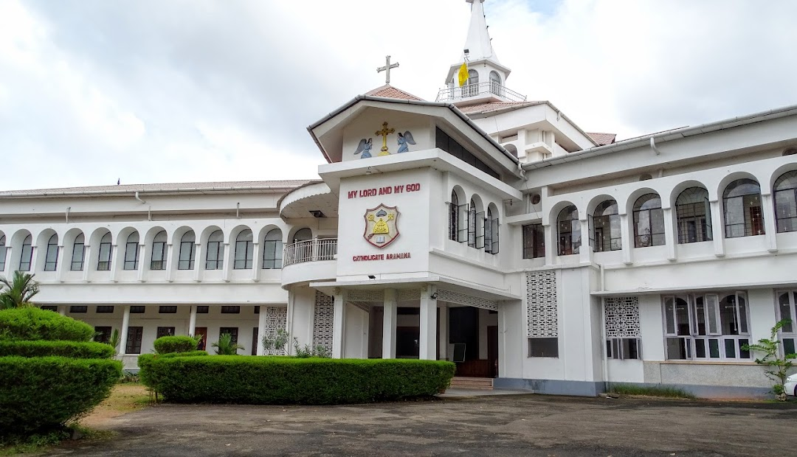
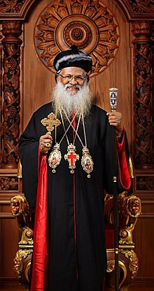

ABOUT THE CHURCH
Church
The Malankara Orthodox Syrian Church, also known as the Indian Orthodox Church, is one of the ancient Oriental Orthodox Churches, rooted in the apostolic traditions established by St. Thomas the Apostle in A.D. 52. This historic Church, with a lineage spanning nearly two millennia, represents one of the oldest Christian communities in the world. Its headquarters is located in Devalokam, Kottayam, Kerala, South India.
As a member of the Oriental Orthodox communion, the Malankara Orthodox Syrian Church holds firmly to the teachings of the early Church and actively engages in ecumenical dialogue to foster Christian unity. It is also a founding member of the World Council of Churches and plays a vital role in the global Christian community. Its rich theological and spiritual heritage has significantly influenced the Christian faith and tradition.
The Church's global presence is marked by its numerous dioceses and parishes across continents, serving the spiritual needs of its faithful. Each diocese is committed to upholding the Church's apostolic mission through worship, education, community service, and ecumenical outreach, embodying the timeless message of Christ's love and hope for all humanity.
Church Metropolitan
Baselios Marthoma Mathews III is the current Catholicos of the East and Malankara Metropolitan, primate of the Malankara Orthodox Syrian Church. He was enthroned as the 22nd Malankara Metropolitan on October 14, 2021, and as the 9th Catholicos on October 15, 2021, at St. Peter and St. Paul's Church, Parumala. He succeeded Baselios Marthoma Paulose II. His leadership guides the Church in its spiritual mission and engagement with contemporary issues. He is actively involved in promoting ecumenical dialogue and fostering interfaith relations. His tenure focuses on strengthening the Church's educational institutions and social outreach programs, continuing the service and community engagement tradition that characterises the Malankara Church.
Diocese
The Diocese of UK-Europe and Africa is part of the Malankara Orthodox Syrian Church, more commonly known as the Indian Orthodox Church. Our Church is one of the Oriental Orthodox Churches and traces its roots to the ancient Christian tradition established by St. Thomas the Apostle in India. This rich apostolic heritage has continued through centuries of faith and tradition, making us one of the most ancient Christian communities in the world. The headquarters of the Indian Orthodox Church is located in Kottayam, Kerala, South India.
The Diocesan Headquarters is based in Swindon, England, and we are blessed with seventy parishes spread across the United Kingdom, Ireland, mainland Europe, South Africa, and Nigeria. We are committed to nurturing the spiritual lives of our faithful and contributing to the broader Christian witness through worship, service, and dialogue.

Diocese Metropolitan
His Grace Abraham Mar Stephanos is the current Metropolitan of the UK-Europe and Africa Diocese of the Malankara Orthodox Syrian Church. He was consecrated as the Diocesan Metropolitan on 1st May 2021 at St. Thomas Orthodox Cathedral, London. His Grace oversees the spiritual and administrative affairs of the Diocese, guiding the faithful in their spiritual journey and community life. He is actively involved in promoting the Church's mission and fostering interfaith relations. His leadership is marked by a commitment to the Church's apostolic tradition and a vision for its growth and witness in the contemporary world.
Born on August 15, 1969, to Mr. K. A. Thomas and Mrs. Annamma in Mylapra, he completed his early education at Seventh Day Adventist School and Marthoma High School in Pathanamthitta. He pursued higher studies at Catholicate College, earning a degree in Mathematics. His theological education includes a Bachelor of Divinity and GST from Kottayam Old Seminary, a Master of Theology from FFRRC, and an MA in Late Antiquity and Byzantine Studies from King's College London.Ordained as a sub-deacon in 1998 by Kuriakose Mar Clemis Metropolitan, he advanced to deaconship in 1999 under Baselios Mar Thoma Mathews II Catholicos and was ordained as a priest on April 8, 2000. On February 25, 2022, he was elected as a Metropolitan candidate at the Malankara Association in Kolenchery. Following his ordination as Ramban on June 2, 2022, he was consecrated as Metropolitan with the name 'Mar Stephanos' by Baselios Mar Thoma Mathews III Catholicos at St. Mary's Cathedral, Pazhanji, on July 28, 2022. He also serves as the President of OASSIS (Orthodox Association for Spiritual Support to International Students).